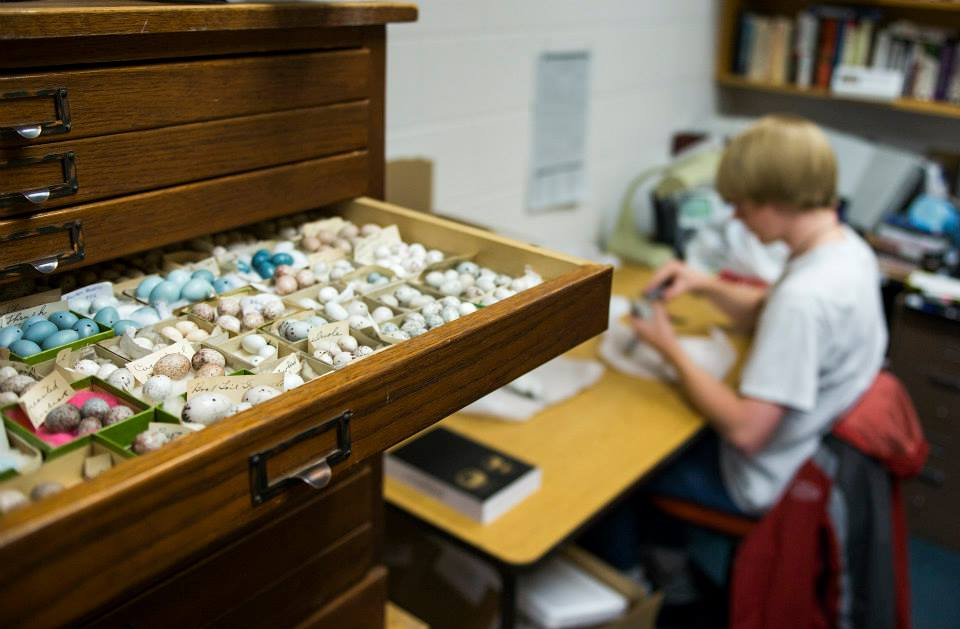
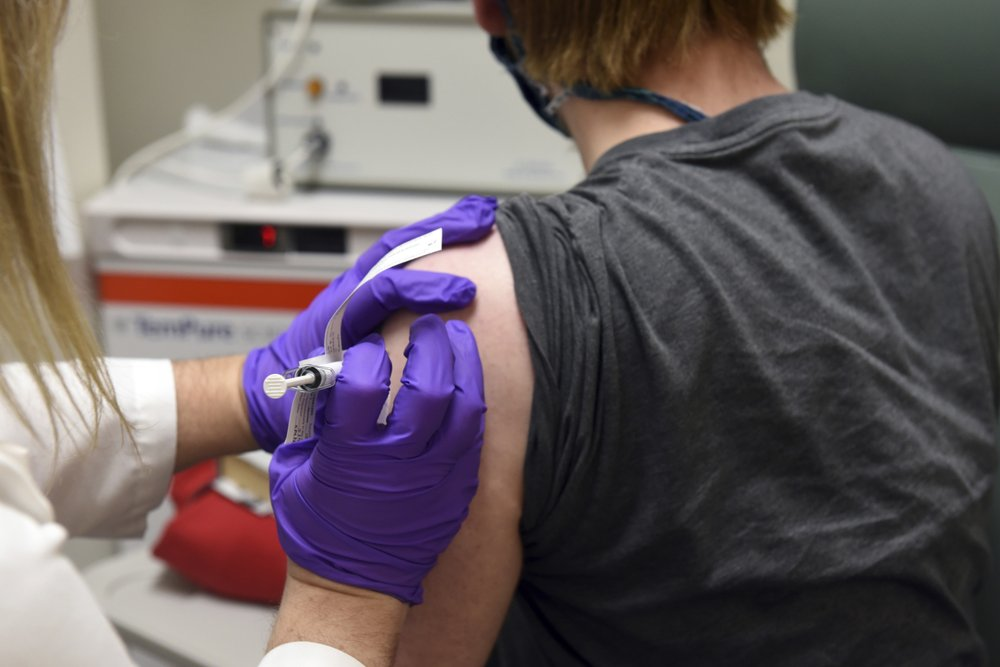

So where are you from?
Growing up as a Third Culture Kid, “Where are you from?” is a question I always hated. The simple concise answers that the majority of my peers would provide when introductions were being made inevitably detoured down a rabbit-hole when it was my turn to introduce myself.
My family, originally from southwest Michigan, USA moved to Chiapas, Mexico for work when I was two. I learned to read and write in Spanish long before I did in English; my childhood memories include birding around the local Mayan ruins on the weekends; and the only time in my life I had ever been to Cancun was after a grueling 22 hour bus ride through the mountains so that I could take my SAT exam for the US university admissions process, as it was the closest testing site.
I moved back to the US for university when I was 17. I graduated from Northwest College, receiving my A.S in Natural Resources Biology. It was during my time in Powell, Wyoming that thanks to undergraduate research opportunities through INBRE that I first became interested in Microbiology. After Northwest, I transferred to the University of Wyoming where I received a B.S. in Molecular Biology and Microbiology, and got my first taste of immunology researching Natural Killer cell responses in mice to secondary Toxoplasma gondii infection in the lab of Dr.Jason Gigley.

After university, I served in the Peace Corps as a Secondary Science Teacher in Ghana from 2016-2018. I taught biology and chemistry at a rural high school in the Volta Region. During my time in Ghana, I worked on secondary projects focused on Malaria that led to my decision to enter a Microbiology and Immunology PhD program.
I moved to Baltimore for my PhD in 2018. After a year and a half of classes and passing my qualifying exam, I was excited to finally start full time in the lab. Since that was March 2020, that was not going to happen. While stuck at home, I volunteered for the Pfizer Phase I clinical trial taking place at the University of Maryland Center for Vaccine Development and somehow ended up having family and friends telling me they saw my arm in the newspaper for the next nine months.

My PhD research was focused on understanding the impact that exposure to maternal HIV infection and antiretrovirals before birth had on immune systems of HIV-exposed uninfected (HEU) infants. Our main cell types of interest were Innate-like T cells (gamma-delta T cells, MAIT, and NKTs) and adaptive T cell subsets (specifically antigen-specific CD4 and CD8 T cells). While we started off working with conventional flow cytometry while planning on doing mass cytometry, we transitioned to spectral flow cytometry (SFC) during the pandemic due to availability.
As early adopters of the technology at our local institution, through trial-and-error we re-discovered that you can’t treat spectral flow cytometry like a conventional flow cytometry and just throw compensation at it to fix the problem. From these early mistakes and encountering best practices shared by the University of Chicago (thanks Laura!) we quickly progressed to getting good unmixing and building larger panels.
Around this time I became interested in unsupervised analysis. I ended up teaching myself R in the course of the year, but encountered issues where existing R packages wouldn’t scale to our SFC dataset size when we were acquiring 3 million cells per sample to get decent ILT numbers from cord blood. After discovering Bioconductor, I started working on two R packages (Luciernaga and Coereba) to address some of these areas.
And that’s journey here. The current questions that wake me up at 2 AM are figuring out how to work with uncertainty in unmixing to get better resolution and consistency in SFC experiments, and more robust ways to analyse and draw meaning from the results where we are not just unaware of what is happening in the other 99% of the collected sample.